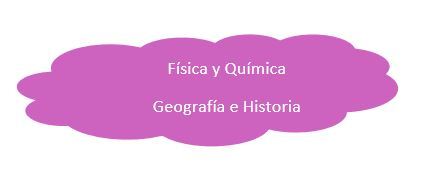
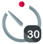

Los tiempos de duración que marcaremos en minutos, deben entenderse como ayuda al desarrollo de la actividad y tomarse de forma flexible, adaptándose y en algunos casos desplazando o eliminando en función del contexto del aula y las características de nuestro alumnado.
Esta actividad puede realizarse de forma interdisciplinar, y coordinada con otras asignaturas. Sobre todo a la hora de relacionar los materiales con su ubicación natural y los procesos de guerras históricos que se han producido por su explotación. 
 Recordamos la sesión anterior y nuestro mapa de ideas.
Recordamos la sesión anterior y nuestro mapa de ideas.
Mostramos nuestro tablero KWL relacionado y preguntamos si se le han ocurrido nuevas cosas que quieran saber para introducirlas.
Proponemos iniciar el trabajo sobre una de las tarjetas 'W':
¿Qué consecuencias tiene el uso de tecnología?
En asamblea, lluvia de ideas. Iremos apuntando en la pizarra en dos listas: Positivas y negativas.
Posiblemente dado el nombre de la situación de aprendizaje la consecuencia medioambiental habrá salido. parémonos en ella y preguntemos ¿De qué están hechos vuestros móviles?
Avanzaremos que realizaremos una práctica en la que los manipularemos por lo que necesitamos saber ¿Tienen riesgos?.
Propondremos una búsqueda en internet muy rápida, donde tendrán que localizar al menos un componente, su material, sus riesgos y su impacto ambiental
Les facilitamos un ejemplo de la información a obtener y les pedimos que indiquen las fuentes de información.
Componente: Carcasa y estructura
Material: Principalmente plástico ABS y policarbonatos.
Riesgos para la salud: Afectan al sistema endocrino y cuando se queman, liberan toxinas.
Impacto ambiental: Los plásticos tardan cientos de años en descomponerse. Y genera microplásticos en el suelo y agua, afectando a la fauna y flora.
Fuente: Wikipedia, programa para el medio ambiente de la ONU y National Geographic.
 Recopilación de resultados que vamos apuntando.
Recopilación de resultados que vamos apuntando.
Valorar las fuentes de información y la dificultad de obtención de información rápida de fuentes fiables.
Revisar han aparecido al menos ( si no es así, completar) :
1. Carcasa y estructura
Material: Principalmente plástico ABS y policarbonatos.
Riesgos para la salud: Cuando se queman, liberan toxinas.
Impacto ambiental: Los plásticos tardan cientos de años en descomponerse. Y genera microplásticos en el suelo y agua, afectando a la fauna y flora.
2. Batería
Material: Litio, cobalto, níquel, manganeso.
Riesgos para la salud: Pueden explotar o incendiarse.
Impacto ambiental: Los metales pesados son tóxicos y pueden contaminar suelo y agua. La minería de litio y cobalto tiene un impacto devastador en ecosistemas locales y consume grandes cantidades de agua.
3. Circuitos Impresos y Chips (Placa base)
Material: Contienen cobre, estaño, oro, paladio, otros metales preciosos y soldaduras de plomo.
Riesgos para la salud: Las soldaduras contienen plomo, que es altamente tóxico.
Impacto ambiental: La extracción de metales preciosos es intensiva en recursos y causa deforestación y pérdida de biodiversidad.
4. Conectores y Antenas
Material: Oro, cobre, plata, paladio.
Riesgos para la salud: El paladio puede causar reacciones alérgicas en algunas personas.
Impacto ambiental: La minería de estos metales preciosos genera residuos tóxicos y usa mucha agua.
5. Pantalla de Cristal Líquido (LCD) o Pantalla OLED
Material: Contiene fósforo, arsénico, galio e indio.
Riesgos para la salud: El arsénico y el galio son tóxicos.
Impacto ambiental: Estas pantallas son difíciles de reciclar y los materiales tóxicos pueden filtrarse al medio ambiente.
6. altavoces y micrófono
Material: Neodimio, hierro y boro.
Riesgos para la salud: Pueden irritar las pieles sensibles en caso de contacto prolongado.
Impacto ambiental: Las tierras raras son difíciles de extraer y su minería puede devastar el medio ambiente, liberando productos químicos tóxicos.
7. Otros Componentes Químicos y Metales Menores
Material: Algunos móviles contienen cantidades mínimas de metales como mercurio, berilio y cadmio.
Riesgos: El mercurio y el cadmio son altamente tóxicos, afectando al sistema nervioso humano y dañando los ecosistemas acuáticos.
Impacto ambiental: Estos metales son considerados altamente peligrosos y se acumulan en el medio ambiente, contaminando el agua y el suelo.
8.Coltán (oro negro)
¿Es un material? Hablar de la existencia de otros tipos de impactos. Ofrecer para los interesados el podcast de recursos Coltán, el mineral manchado de sangre
 Visualizamos el video
Facilitaremos para los y las que quieran saber más los recursos en distintos formatos de Coltán y Microplásticos.
Preguntamos ¿Solo trae problemas la tecnología? ¿puede ser parte de la solución en los problemas vistos?
Centrémonos nuevamente en la basura tecnológica ¿Puede la tecnología proteger el medioambiente? ¿incluimos la pregunta en nuestro KWL?.
Pedimos busquen información en grupos, durante 10 minutos. Volvemos a insistir en la importancia de las fuentes.
El o la docente va moviéndose por grupos.
Los descubrimientos relevantes, hacemos que los incluyan en la tarjeta KWL. Intentamos que todos los grupos aporten.
Algunas ideas para inducir la búsqueda si no se orientan:
Energías renovables. Se han convertido en una pieza fundamental en la protección del medio ambiente y en la transición hacia un futuro sostenible. Proceden de fuentes naturales no limitadas, como la radiación solar, el viento, la biomasa, la geotermia y la energía hidroeléctrica.
Gestión de residuos. El reciclaje reduce la necesidad de extraer nuevas materias primas o fabricar nuevos materiales y consume menos energía. La tecnología juega aquí un papel primordial. Por un lado, permite la implementación de soluciones innovadoras, como el desarrollo de sistemas de clasificación automatizada y separación de residuos. Igualmente, la implementación de sensores y tecnologías de seguimiento posibilita un monitoreo más preciso de los flujos de residuos. Y por otro, estimula la investigación de nuevos materiales.
Gestión eficiente de los recursos naturales. Es esencial para garantizar la sostenibilidad a largo plazo y reducir el impacto ambiental de nuestras actividades. Consiste en utilizar los recursos naturales de manera responsable, optimizar su consumo, reutilizar y reducir al máximo el desperdicio. El Internet de las cosas (IoT) y los sensores inteligentes permiten monitorear y controlar el consumo de agua, energía y otros recursos. De este modo, se optimiza su uso y se reduce el gasto. Asimismo, la aplicación de la inteligencia artificial y el aprendizaje automático en la agricultura o silvicultura, por ejemplo, minimizan el empleo de pesticidas y fertilizantes, y maximizan el rendimiento de los cultivos.
https://www.telefonica.com/es/sala-comunicacion/blog/afecta-tecnologia-medioambiente/
Una vez acabado el tiempo, leemos en asamblea como ha quedado nuestra tarjeta y aclaramos dudas de todo lo incluido.
Acabar con resumen de la clase y movimiento de tarjetas K-W-L
Y avisar de que la información que hemos recabado de los materiales, es un conocimiento básico que valoraremos en la evaluación y que su aprendizaje requerirá repetición y/o reglas nemotécnicas. Proponemos realicen para ello tarjetas flashcards. Y nos ofreceremos para consultas si tienen problemas con la retención.
Proponer ampliar en casa la información: investigar el oro azul.
Icons by freepik